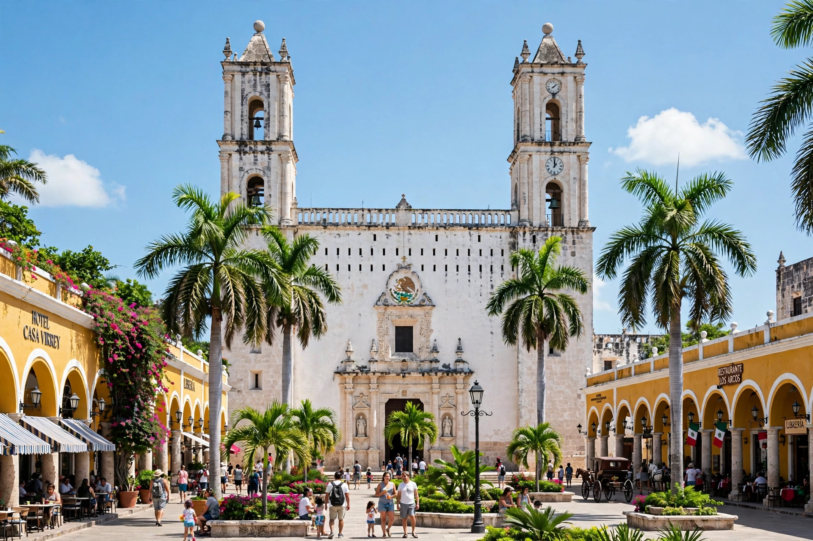

Mérida, Yucatán
Mérida (Spanish pronunciation: [ˈmeɾiða]) is the capital of the Mexican state of Yucatán and the largest city in southeastern Mexico. It is located in the northwest corner of the Yucatán Peninsula, about 35 km (22 mi) inland from the port of Progreso on the Gulf of Mexico. The city was founded in 1542 by Spanish conquistador Francisco de Montejo the Younger on the site of the Maya city of T'hó, and named after Mérida in Extremadura, Spain. Its municipal population is about one million, making it one of the largest metropolitan areas in Mexico.

| Mérida | |
|---|---|
| Country | Mexico |
| State | Yucatán |
| Founded | January 6, 1542 |
| Elevation | 10 m (33 ft) |
| Population (metro) | approx. 1.3 million |
| Time zone | UTC−6 (CST) |
History
Before the arrival of the Spanish, the site was the Maya city of T'hó ("city of five hills"), a ceremonial centre whose pyramids were dismantled to build the colonial cathedral and the Montejo palace. During the colonial era Mérida was a walled city, entered through arches that partly survive. In the late 19th and early 20th centuries, the henequen (sisal) boom made Yucatán one of the wealthiest regions in Mexico, and Mérida's grand avenue, the Paseo de Montejo, was lined with Beaux-Arts mansions. The city was also a flashpoint of the Caste War of Yucatán, though it was never taken by Maya rebels.
Culture
Mérida is regarded as the cultural capital of the Yucatán Peninsula, with a large historic centre second in Mexico only to Mexico City's. It was named American Capital of Culture in 2000 and 2017. The city has a strong Yucatecan identity blending Spanish and Maya heritage, expressed in its cuisine (such as cochinita pibil, sopa de lima and panuchos), its trova music, jarana dancing and the white guayabera and terno dress. Weekly public events include the Sunday "Mérida en Domingo" street festival in the main plaza.
Climate
Mérida has a tropical savanna climate with a wet season from June to October and high temperatures throughout the year; it is nicknamed La Ciudad Blanca, the White City, a name variously attributed to its white limestone buildings and colonial-era cleanliness ordinances.